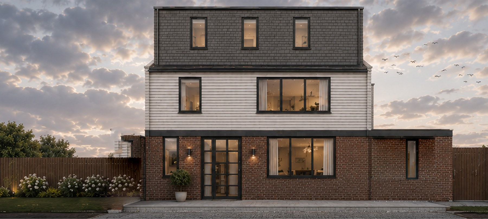

Conservatory design
Contemporary conservatories and glass extensions, designed for thermal performance and coordinated with the structure of the house.
Contemporary conservatories and glass extensions, designed for thermal performance and coordinated with the structure of the house.

Contemporary conservatories and glass extensions are designed for comfort throughout the year, and as part of the house rather than an addition to it.
Orientation, glazing specification, shading and ventilation are resolved together so that the room avoids the extremes of temperature associated with traditional conservatories.
Many conservatories fall within permitted development; larger proposals and those in conservation areas require planning permission. Some are exempt from parts of the Building Regulations where they are thermally separated from the house.
The studio prepares the design, planning submission where required, and technical coordination with the manufacturer and contractor.
Fees are fixed for each stage and confirmed in writing once the scope is agreed. Construction cost depends on the site, the specification and the procurement route, and is established through an indicative cost plan at feasibility stage.
Fees are fixed at each stage and confirmed in writing, so that cost is known before design begins.
A director leads each project from the first conversation to completion, giving continuity at every stage.
Every enquiry is answered by a director within one working day, and progress is reported at every stage.
Advice follows the evidence, including where it departs from the initial brief.
Design is resolved in detail before it reaches site, so that the quality of the idea is carried into the built work.
Services that usually sit alongside this appointment. Fixed fees, staged, with a director leading the work.
Provide the site address and a summary of the requirement. A director will respond within one working day.